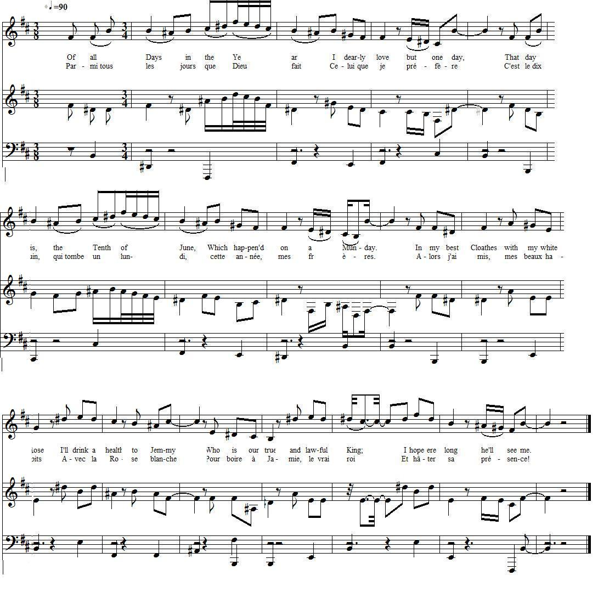
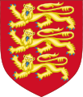

James the Rover
Jacques dans l'Errance
A White Rose Day Song - Chant pour la fête de la Rose blanche
from a MS in the "DOUCE Collection", part of the "Rawlison MSS" in the Bodleian Library.
Tiré de la collection de manuscrits Douce, issue du recueil Rawlison de la Bibliothèque Bodléienne (Université d'Oxford)
Tune - Mélodie
"Sally in our alley"
Sequenced by Lesley Nelson-Burns (see links)
Tiré de la collection de manuscrits Douce, issue du recueil Rawlison de la Bibliothèque Bodléienne (Université d'Oxford)
|
To the tune:
Since the 2nd verse is evidently inspired by the 2nd verse in Henry Carey's song, "Sally in our Alley" , the present text should be sung to the same tune: 1. Of all the girls that are so smart... 2. Her father he makes cabbage-nets, And through the streets does cry 'em; Her mother she sells laces long To such as please to buy 'em; But sure such folks could ne'er beget So sweet a girl as Sally! She is the darling of my heart, And she lives in our alley... Source: C.H. Firth in "Scottish Historical Review", 1911, page 252. |
 |
A propos de la mélodie:
Comme le 2ème couplet de ce chant suit mot à mot celui de la ballade de Henry Carey, "Sally de notre ruelle" , le présent texte se chante sans doute sur la même mélodie: 1. De toutes les filles à la page... 2. Son père tresse des cageots Et parcourt les rues en criant C'est de la dentelle que vend Sa mère, à qui trouve ça beau: Et de telles gens auraient pu Engendrer fille aussi charmante? Elle a pris mon cœur, la méchante. Elle habite au coin de la rue... Source: C.H. Firth in "Scottish Historical Review", 1911, page 252. |

|
AN EXCELLENT NEW BALLAD
1. Of all Days in the Year I dearly love but one day, That day is, the Tenth of June, Which happen'd on a Munday.[1] In my best Cloathes with my white Rose [2] I'll drink a health to J[e]m[m]y [3] Who is our true and lawful K[in]g; I hope ere long he'll see me. 2. Old H[anover] does Turnips sell [4] And through the streets do[es] cry them; Young Noodle leads about the Ass [5] To such as please to buy them; [6] Such Folks as these can never be Compar'd to Royal J[e]m[m]y, Who is our true and lawful King; I hope ere long he'll see me. 3. Potatoes are a Dainty Dish, [7] And Turnips now are springing, When J[a]m[e]s our K[in]g does come home, We will set the Bells a-ringing. We'll take the old Whelp by the Snout [8] And lead him down to Dover, Then pop him in his Leathern Boat [9] And send him to H[a]n[ove]r. 4. The British Lyon then shall Tear The Foundred Horse of B[ru]n[swic]k, [10] And G[eor]ge for want of better Nagg Shall ride upon a Broomstick. Such hags as those in Cavalcade [11] Shall carry down to Dover, His MALE AND FEMALE CONCUBINES, [12] And ship 'em for H[a]n[ove]r. Source: "The DOUCE Collection", part of the "Rawlison MSS" in the Bodleian Library. |
UNE EXCELLENTE NOUVELLE BALLADE
1. Parmi tous les jours que Dieu fait Celui que je préfère C'est le dix juin, qui tombe un lun- -di, cette année, mes frères. [1] Alors j'ai mis, mes beaux habits Avec la Rose blanche [2] Pour boire à Jamie, le vrai roi [3] Et hâter sa présence! 2. Dans les rues c'est pour ses navets Qu'Hanovre fait l'article. [4] Son fils nigaud, tire le bau- [5] -det où va la pratique! [6] Non, ces gens-là ne valent pas Qu'on les compare à Jacques Il n'est de roi que lui, ma foi. De le revoir j'ai hâte. 3. Des navets bientôt c'est la fin. Préférons les patates! [7] Alors au son des carillons Nous verrons rentrer Jacques! Que le vieux Chiot, par le museau, [8] Soit traîné jusqu'à Douvres! Et dans son coracle, à vau-l'eau, [9] Qu'il retourne à Hanouvre! 4. Le Lion anglais va dévorer La famélique rosse, [10] Qu'un balai, faute d'un bidet, Notre Georges chevauche! Et des ménades de cavalcade [11] Reconduiront les pauvres Concubines et concubins [12] Vers Douvres et Hanovre! (Trad. Christian Souchon (c) 2011) |
|
[1]
The tenth of June ... a Monday
: The birthday of James Francis Stuart, born on 10th June 1688. If New Style is used (and if I was not mistaken when reading my perpetual calendar) the year, within George I's reign (1714 - 1727), should be 1715.
[2] White Rose : The Jacobites took up the White Rose of the House of York as their emblem, celebrating "White Rose Day" on 10 June, the anniversary of the birth of James III and VIII in 1688. [3] J-m-y : Like in the "True Loyalist" (1779), in this MS the "politically uncorrect" words are hinted at by easily understandable abbreviations. Here apparently "Jimmy" or "Jemmy", for James Francis Stewart, the Jacobite King James III and VIII., though he is usually referred to by the affectionate diminutive "Jamie". [4] Turnip : One of the favourite popular jests against the Hanoverian kings, whose sole diet and only product of their native Electorate was thought to be turnip. (see The Turnip ). [5] Young Noodle : may refer to the Prince of Wales, George Augustus, future king George II, before 1717. George Augustus could not be considered his father's auxiliary ever after. He quarreled with his father, who was jealous of his popularity, on the occasion of the birth of his second son. He was banished from St James's Palace. [6] Such as please to buy them : The Whigs [7] Potatoes are a dainty dish : A surprising remark in a song dating from the reign of George I (1714 - 1727). Following their conquest of the Inca Empire, the Spanish introduced the potato to Europe in the second half of the 16th century. The potato was slow to be adopted by distrustful European farmers and was not to become an important food staple until the 19th century. The English often confused the common and the sweet potatoes one for the other [8] Whelp : The name of the dynastic House of Welf is rendered in English, as Guelf or Guelph, and satirically, as Whelp. The head of the Welf branch of Brunswick-Lüneburg was raised to the status of an imperial elector, and became known as the Elector of Hanover. His son, Georg Ludwig, inherited the British throne in 1714 as a result of the Act of Settlement 1701. [9] Leathern boat : "The curach (coracle) or boat of leather and wicker may seem to moderns a very unsafe vehicle, to trust to tempestuous seas, yet our forefathers fearlessly committed themselves in these slight vehicles to the mercy of the most violent weather. They were once much in use in the Western Isles of Scotland, and are still found in Wales." Dwelly's Gaelic Dictionary [10] The foundred horse : Since 1361 the coat of arms of the House of Welf displays a white horse (das "Sachsenross" the horse of Saxony). The beasts in the royal arms of Englands inherited from the Dukes of Normandy are called "Lions passant gardant" in Britain and "Leopards" in Normandy, in spite of their manes! [11] Cavalcade : "A cavalcade is a procession or parade on horseback, often re-enacting an important historical event. Many cavalcades involve ceremonial entries into or departures from towns and villages along the way." (Wikipedia) George I inaugurated his reign by entering London formally in a ceremonial procession. [12] "His male and female concubines" : That King George I had two mistresses is well-known. That he had male concubines is not mentioned elsewhere (maybe, in a cryptic way, in verse 11 of Geordie's Testament ) and should perhaps be understood in an "allegoric" sense, as a hint at his Whig "confederates". |
[1]
Le dix juin qui tombe un lundi
: Il s'agit de l'anniversaire de Jacques François Stuart, né le 10 juin 1688. Dans le calendrier "nouveau style" (et si je ne trompe pas dans le maniement du calendrier perpétuel), l'année en question qui se situe au cours du règne de Georges I (1714 - 1727) doit être 1715.
[2] Rose blanche : Les Jacobites adoptèrent comme emblème la Rose blanche de la Maison d'York, pour célébrer, le jour de la Rose blanche, le 10 juin, l'anniversaire de la naissance de Jacques III/VIII en 1688. [3] J-m-y : Comme dans "le Vrai Loyaliste" (1779), dans ce manuscrit les mots "subversifs" sont remplacés par des abréviations faciles à interpréter. Ici il semble qu'on doive lire "Jimmy" ou "Jemmy", pour Jacques François Stuart, le roi Jacques III/VIII des Jacobites, bien que l'on rencontre plus souvent le diminutif affectueux "Jamie". [4] Navet : L'une des plaisanteries habituelle à l'encontre des rois Hanovriens, dont on affirmait qu'ils ne se nourrissaient que de ce légume, le seul à pousser dans leur lointain Electorat. (Cf. Le Navet ). [5] Fils nigaud : Il doit s'agir du Prince de Galles, Georges Auguste, futur roi George II, avant 1717. Après cette date on n'aurait pu le considérer comme un assistant de son père, les 2 hommes s'étant brouillés à la naissance d'un second petit-fils. Le père, jaloux de la popularité du fils, l'éloigna du Palais de Saint James. [6] La pratique : Sans doute les Whigs. [7] Préférons les patates : Remarque surprenante dans un chant datant du règne de George I (1714 - 1727). Après leur conquête de l'empire Inca, les Espagnols introduisirent la pomme de terre en Europe dans la seconde moitié du 16ème siècle. Ce légume mit du temps à s'imposer chez les paysans européens méfiants et ne devint un aliment essentiel qu'au 19ème siècle. Les Anglais confondaient souvent la "patate" (pomme de terre) et la "patate douce". [8] Chiot : Le nom de la dynastie des Guelfes est rendu en anglais par les mots "Guelf" ou "Guelph", et avec une intention satirique, "Whelp" (jeune animal, chiot). Le chef de la branche de Brunswick-Lunebourg obtint le statut d'Electeur de Hanovre. Son fils, Georges-Louis hérita du trône d'Angleterre, en application de l'Acte de Dévolution de 1701. [9] Coracle : "Le curach ou bateau de cuir et d'osier peut nous paraître aujourd'hui un véhicule bien fragile pour se risquer sur des mers agitées. Pourtant nos ancêtres affrontèrent les pires intempéries à bord de ces frêles embarcations. On les utilisaient autrefois dans les Hébrides et elles sont toujours en usage au Pays de Galles." Dictionnaire gaélique de Dwelly.  [10] Ta famélique rosse : Depuis 1361 les armes des Guelfes portent un cheval blanc qui est aujourd'hui l'emblème de l'état de Basse Saxe. Les animaux sur les armes royales d'Angleterre, héritées des Ducs de Normandie sont dits "Lions passants gardants" en Grande Bretagne et "Léopards" dans leur pays d'origine (bien que pourvus de crinières!)[11] Cavalcade : Une cavalcade est une procession ou une parade à cheval, souvent destinée à commémorer quelque événement important. Il s'agit souvent d'entrées dans une ville ou de départ selon un itinéraire prescrit." (Wikipedia) Georges I inaugura son règne en entrant dans Londres accompagné d'une tel cortège de cérémonie. [12] Concubines et concubins : Chacun sait que Georges avait deux maîtresses. Qu'il ait eu des "concubins" n'est mentionné nulle part (à moins que ce ne soit le sens caché du couplet 11 du Testament de Geordie ). Peut-être sont-ce ses "complices" Whigs qui sont visés par ce terme "allégorique". |
|
|
|